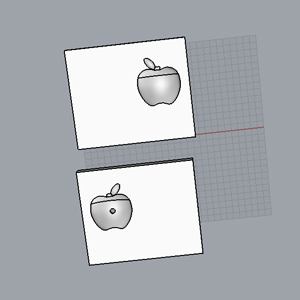
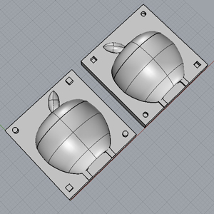
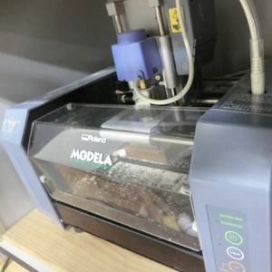
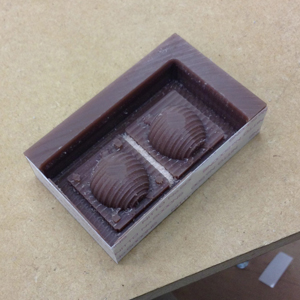
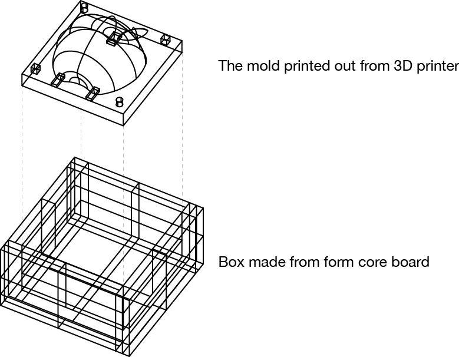
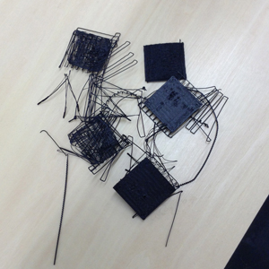
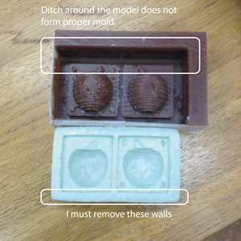
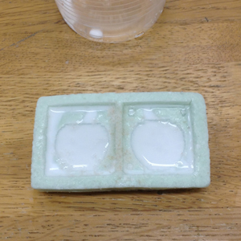

Kousuke Kikuchi
Fab Academy Participant and PhD Candidate
Week 7: Molding and Casting
1. Introduction
This week's assignment is to "design a 3D mold, machine it, and cast parts from it." I decided to make a mold for edible material because of so-called "White Day" here in Japan. Unlike western countries, Japanese women send chocolate as a gift. In March 14, men should give a return gift to the woman. The gift for woman varies: Some send a handkerfchief or food. So, I decided to make a mold for food because its attempt can resolve two problems at the same time: assignment and the gift.
2. Material and ingredient
FIrstly, the material used for a food mold is only limited due to the safety. At this point, algenic acid and safe silicone are the suitable material for food mold. Ingredient for casting has variety. Chocolate, candy are prevalent ingredient for food cast. But, the most interesting for me is the molecular gastronomy.
2.1 Algenic acid
Algenic acid is a mold material yielded from seaweed such as kombu. Hence, this material is not only safe for the body but also quite cheap than other mold material. I could get this material around ¥1500 / 500g from this link. However, here in Japan algenic cast for food purpose is no longer sold. Other problem of this algenic acid is the preservation. Since algenic acid cast is disposable, the user must make same mold if he/she wants other cast. Algenic acid is not preferable for industrial purpose.
2.2 Silicone
The other material food-proofed silicone can be a quite expensive. However, this material is not detriment. Also, mold based on this material can be used many times. Finally, I could buy this material at Tokyu Hands Shibuya Store.
2.3 Ingredient for cast
Chocolate and candy are prevailing material for making cast because the liquid will solidify easily, with being the material cold. When look at the world of "Molecular gastronomy," profitient knowledge of chemistry will be necessary at cooking. Also, aparatus for experiment is needed. Videos of Heston Blumenthal, one of the top molecular gastronomy chef in the world, and "Science and Cooking" provided by Harvard University School of Engineerging and Applied Science, illustrate the good example of molecular gastronomy.
Even though the molecuar gastronomy is interesting, I tried to cast based on chocolate because of the convenience.
3. Modeling (March 11, 2013 JST)
Based on the Rhinoceros, I designed an apple which is quite similar as the logo of "Apple Computer." But, the Wax I could get at Tokyu hands was so thin that I designed thin apple.

But, I found this model was not good for mold. I modified this model 6 times.

4. Machining
I manuevered Modela Player to machine this model.

However I missed the setup of this cutting. So, the wax I cut became like that. Also, I found that the silicone for molding requires 24 hours to consolidate and 4 hours of baking.

Since I do not have other chance to try milling this model, I catched two idea for molding and casting. Using this mold and make a mold by combination of 3D printer.

5. 3D printing attempt (March 12, 2013 JST)
I bought an A3 sized form core board, plaster and Algenic acid. And I tried printing out the model by using The Replicator at my university which I use for the first time. However, since this machine could not have proper calibration, I faced difficulty to print out these model. Three hour was required for me to find the problem and calibrate. But even though the several attemps, the 3D printer could not print out the proper model. I must check the difference between Replicator of SFC*SFC and ours.

6. Ordinary method (March 13, 2013 JST)
Since I bought algenic acid and plaster, I poured algenic acid into a mold. But I found fatal mistake at designing the model.

This is a result. And then I poured plaster into algenic acid mold.


7. Notes on molding and casting
I had two mistake at Modela Player. One of the problem is the defining an area to engrave. The other fatal problem is the failure to setup the depth of the END LINES.
Also,